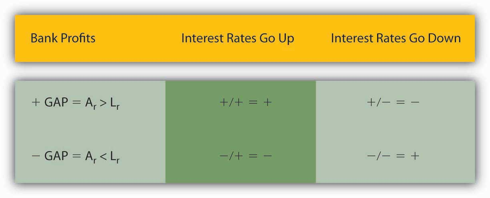

Financial intermediaries can also be brought low by changes in interest rates. Consider the situation of Some Bank, which like most depository institutions borrows short and lends long:
| Some Bank | (Billions USD) |
|---|---|
| Assets | Liabilities |
| Interest-rate-sensitive assets like variable rate and short-term loans and short-term securities $10 | Interest-rate-sensitive liabilities like variable rate CDs and MMDAs $20 |
| Fixed-rate assets like reserves, long-term loans and securities $50 | Fixed-rate liabilities like checkable deposits, CDs, equity capital $40 |
If interest rates increase, Some Bank’s gross profits, the difference between what it pays for its liabilities and earns on its assets, will decline (assuming the spread stays the same) because the value of its rate-sensitive liabilities (short-term and variable-rate time deposits) exceeds that of its rate-sensitive assets (short-term and variable- rate loans and securities). Say, for instance, it today pays 3 percent for its rate-sensitive liabilities and receives 7 percent on its rate-sensitive assets. That means it is paying 20 × .03 = $.6 billion to earn 10 × .07 = $.7 billion. (Not bad work if you can get it.) If interest rates increase 1 percent on each side of the balance sheet, Some Bank will be paying 20 × .04 = $.8 billion to earn 10 × .08 = $.8 billion. (No profits there.) If rates increase another 1 percent, it will have to pay 20 × .05 = $1 billion to earn 10 × .09 = $.9 billion, a total loss of $.2 billion (from a $.1 billion profit to a $.1 billion loss).
Inflation was unexpectedly high in the 1970s. Given what you learned about the relationship between inflation and nominal interest rates (as inflation increases, so too must nominal interest rates, all else equal), and between interest rates and bank profitability in this chapter, what happened in the 1980s?
Bank profitability sank to the point that many banks, the infamous savings and loans (S&Ls), went under. Inflation (via the Fisher Equation) caused nominal interest rates to increase, which hurt banks’ profitability because they were earning low rates on long-term assets (like thirty-year bonds) while having to pay high rates on their short-term liabilities. Mounting losses induced many bankers to take on added risks, including risks in the derivatives markets. A few restored their banks to profitability, but others destroyed all of their bank’s capital and then some.
Of course, if the value of its risk-sensitive assets exceeded that of its liabilities, the bank would profit from interest rate increases. It would suffer, though, if interest rates decreased. Imagine Some Bank has $10 billion in interest rate-sensitive assets at 8 percent and only $1 billion in interest rate-sensitive liabilities at 5 percent. It is earning 10 × .08 = $.8 billion while paying 1 × .05 = $.05 billion. If interest rates decreased, it might earn only 10 × .05 = $.5 billion while paying 1 × .02 = $.02 billion; thus, ceteris paribus, its gross profits would decline from .8 − .05 = $.75 billion to .5 − .02 = $.48 billion, a loss of $.27 billion. More formally, this type of calculation, called basic gap analysis, is
where:
Cρ = changes in profitability
Ar = risk-sensitive assets
Lr = risk-sensitive liabilities
Δi = change in interest rates
So, returning to our first example,
and the example above,
Complete the exercise to get comfortable conducting basic gap analysis.
Use the basic gap analysis formula to estimate Some Bank’s loss or gain under the following scenarios.
| Risk Sensitive Assets (Millions USD) | Risk Sensitive Liabilities (Millions USD) | Change in Interest Rates (%) | Answer: CP (Millions USD) |
|---|---|---|---|
| 100 | 100 | 100 | 0 |
| 100 | 200 | 10 | −10 |
| 100 | 200 | −10 | 10 |
| 199 | 200 | 10 | −0.1 |
| 199 | 200 | −10 | 0.1 |
| 200 | 100 | 10 | 10 |
| 200 | 100 | −10 | −10 |
| 200 | 199 | 10 | 0.1 |
| 200 | 199 | −10 | −0.1 |
| 1000 | 0 | 1 | 10 |
| 0 | 1000 | 1 | −10 |
Now, take a look at Figure 9.3 "Basic gap analysis matrix", which summarizes, in a 2 × 2 matrix, what happens to bank profits when the gap is positive (Ar > Lr) or negative (Ar < Lr) when interest rates fall or rise. Basically, bankers want to have more interest-sensitive assets than liabilities if they think that interest rates are likely to rise and they want to have more interest rate-sensitive liabilities than assets if they think that interest rates are likely to decline.
Figure 9.3 Basic gap analysis matrix
Of course, not all rate-sensitive liabilities and assets have the same maturities, so to assess their interest rate risk exposure bankers usually engage in more sophisticated analyses like the maturity bucket approach, standardized gap analysis, or duration analysis. Duration, also known as Macaulay’s Duration, measures the average length of a security’s stream of payments.www.riskglossary.com/link/duration_and_convexity.htm In this context, duration is used to estimate the sensitivity of a security’s or a portfolio’s market value to interest rate changes via this formula:
Δ%P = percentage change in market value
Δi = change in interest (not decimalized, i.e., represent 5% as 5, not .05. Also note the negative sign. The sign is negative because interest rates and prices are inversely related.)
d = duration (years)
So, if interest rates increase 2 percent and the average duration of a bank’s $100 million of assets is 3 years, the value of those assets will fall approximately −2 × 3 = −6%, or $6 million. If the value of that bank’s liabilities (excluding equity) is $95 million, and the duration is also 3 years, the value of the liabilities will also fall, 95 × .06 = $5.7 million, effectively reducing the bank’s equity (6 − 5.7= ) $.3 million. If the duration of the bank’s liabilities is only 1 year, then its liabilities will fall −2 × 1 = −2% or 95 × .02 = $1.9 million, and the bank will suffer an even larger loss (6 − 1.9 =) of $4.1 million. If, on the other hand, the duration of the bank’s liabilities is 10 years, its liabilities will decrease −2 × 10 = −20% or $19 million and the bank will profit from the interest rate rise.
A basic interest rate risk reduction strategy when interest rates are expected to fall is to keep the duration of liabilities short and the duration of assets long. That way, the bank continues to earn the old, higher rate on its assets but benefits from the new lower rates on its deposits, CDs, and other liabilities. As noted above, borrowing short and lending long is second nature for banks, which tend to thrive when interest rates go down. When interest rates increase, banks would like to keep the duration of assets short and the duration of liabilities long. That way, the bank earns the new, higher rate on its assets and keeps its liabilities locked in at the older, lower rates. But banks can only go so far in this direction because it runs against their nature; few people want to borrow if the loans are callable and fewer still want long-term checkable deposits!